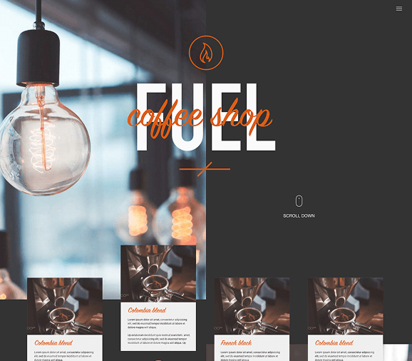
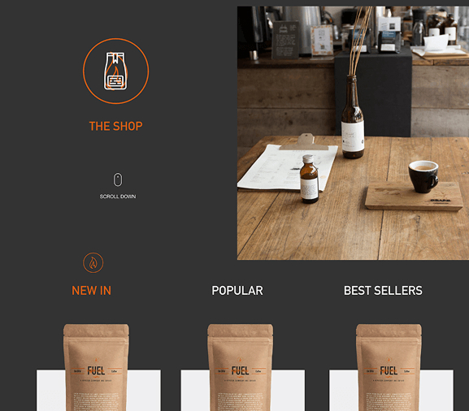
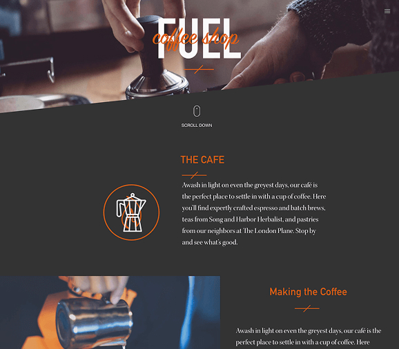

Fuel Coffee:
Brand & Digital Concept
A conceptual exploration of industrial aesthetics in the artisan coffee market. Creating a high-energy Direct-to-Consumer (DTC) brand from scratch.
1. The "High Octane" Aesthetic
Most coffee brands lean into "rustic" or "cozy" visuals. I wanted to disrupt this by leaning into the concept of coffee as Fuel. I used a stark, high-contrast colour palette (Asphalt Grey & Safety Orange) paired with bold, industrial typography to create a brand that feels urgent and energetic.

2. Atomic Component Design
I built a modular card system to handle variable product data (Roast Level, Origin, Tasting Notes). The challenge was to pack density into a small space without clutter. I used iconography and a rigorous grid system to ensure scannability.

3. Editorial Layouts
To elevate the brand beyond a simple shop, I designed editorial-style content pages. Large imagery breaks the grid, and "sticky" side navigation allows users to read about the sourcing process while keeping the "Add to Basket" action always visible.

Typography
Sans-Serif Geometric
Chosen for readability at speed.
Colour System
High Contrast
WCAG AA Compliant Orange/Grey.
Tools Used
Figma + MidJourney
Layout & Asset Generation.
Component grid
Implementation notes
Product cards recycle the same anatomical slices (media, roast meta, tasting notes). On the web that becomes a repeatable grid—not bespoke artboards per SKU.
<ul class="product-grid" role="list">
<!-- each item: lazy image + meta row + tasting notes -->
<li class="card"> ... </li>
</ul>The Concept Brief
The "Why"
This project was a self-initiated challenge to explore how industrial design language could apply to a luxury consumable. The goal was to build a complete visual identity system—from logo to UI—that felt cohesive, modern, and distinct from the "rustic" competition.
Visual Strategy
I utilised AI tools (MidJourney) to generate consistent product photography, allowing me to prototype a "real" e-commerce experience without a photoshoot budget. This demonstrates how AI can accelerate the ideation phase of design.
Outcome
A fully responsive web prototype and a reusable Figma component library that proves a bold, minimal aesthetic can still support complex e-commerce functionality.